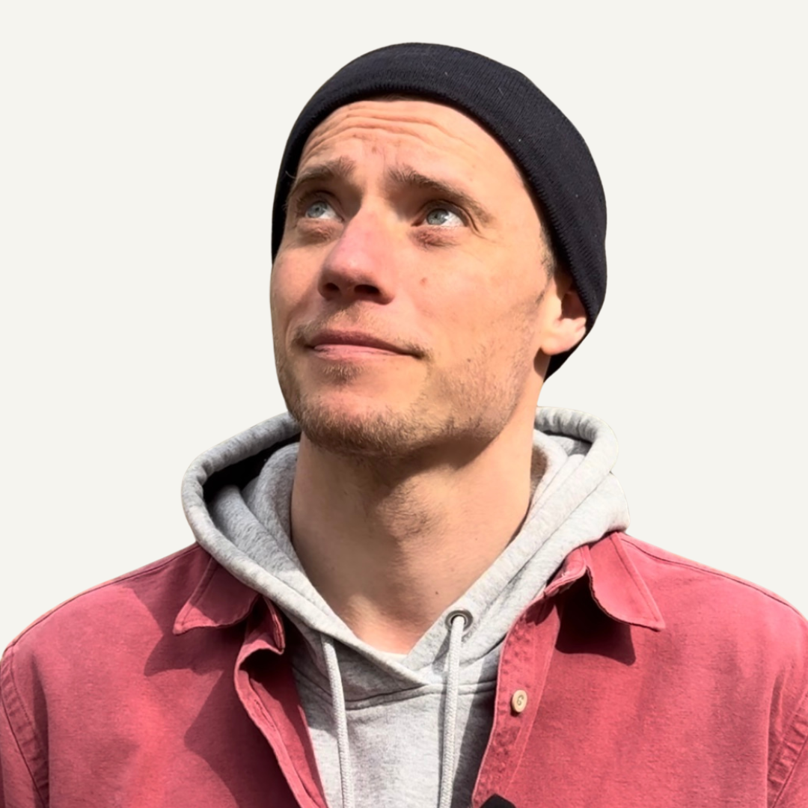

Über Felix
Ich bin Felix.
Ich war Ingenieur. Ich baute technische Lösungen gegen den Klimawandel — und war innerlich getrieben. Ängstlich. Depressiv.
Ich habe alles versucht. Verhaltenstherapie. Psychoanalyse. Gestalt. Coaching. Meditation. Familienstellen. Vieles hat geholfen. Nichts hat mich nachhause gebracht.
Dann führte mich mein Weg zu einem Lehrer aus den Anden. Und zum Volk der Kogi. Die ersten Menschen, die nicht führen, wie der Westen führt. Eine innere Arbeit, die sich zum ersten Mal wirklich stimmig anfühlte.
Das hat mein Leben verändert. Nicht in der Theorie. In mir. Das gebe ich hier weiter.
